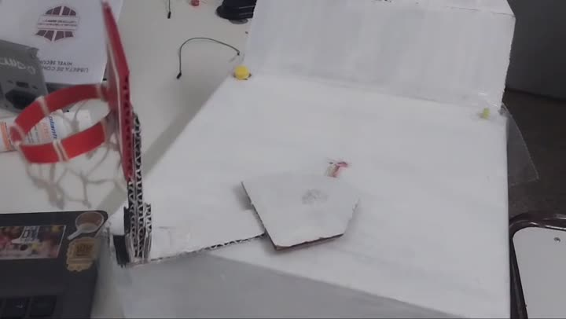
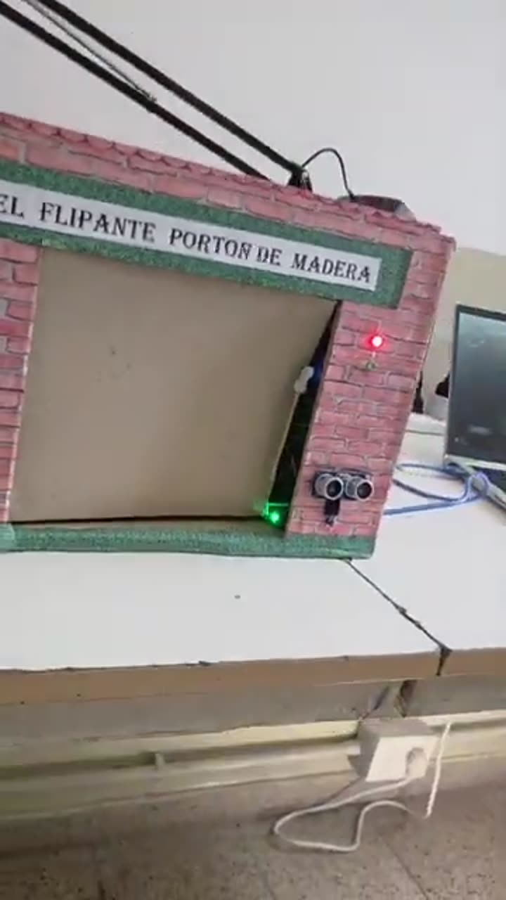
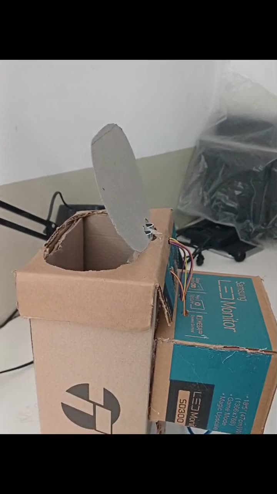

Formación integral
Educación secundaria y desarrollo progresivo de habilidades tecnológicas, científicas y sociales.
Nuestra propuestaLa informática es mucho más que usar computadoras: implica diseñar soluciones, desarrollar pensamiento lógico, trabajar en equipo y aprender a comunicar ideas.
Educación secundaria y desarrollo progresivo de habilidades tecnológicas, científicas y sociales.
Nuestra propuestaProgramación, redes, sitios web, electrónica y proyectos que conectan la teoría con la práctica.
Proyectos estudiantilesPrácticas y talleres que promueven el intercambio de conocimientos con otras instituciones.
Prácticas y experienciasDesde su inauguración en 1993, la institución ha construido un camino de transformación. Hoy ponemos en valor tanto su historia como los aprendizajes, proyectos y oportunidades de las nuevas generaciones.
Conocer nuestra historia
Las producciones de nuestros estudiantes expresan el trabajo compartido entre distintas materias y años.
El desarrollo de propuestas tecnológicas, las muestras escolares y la participación en actividades externas son oportunidades para aprender a presentar ideas, superar desafíos y compartir resultados.
Conocé nuestras experienciasMediante invitaciones de entidades externas, la escuela acerca programas de capacitación y proyección académica a estudiantes y egresados.
Estamos en Villa Mercedes. Consultá nuestra ubicación, escribinos o seguí las novedades institucionales.
Escuela Técnica N.º 20 «Antonio Berni»
Pasaje Dorrego y Teniente Turrado, barrio 828 Viviendas, Villa Mercedes, San Luis, Argentina.
El mapa interactivo requiere conexión a Internet. Abrir ubicación en Google Maps.
Dejanos tus datos para que el equipo de la escuela pueda responderte.
Actividades y experiencias que muestran el presente de la ET N.º 20.
Mirá algunas de las experiencias desarrolladas por nuestros estudiantes: circuitos, automatizaciones y prototipos interactivos.


